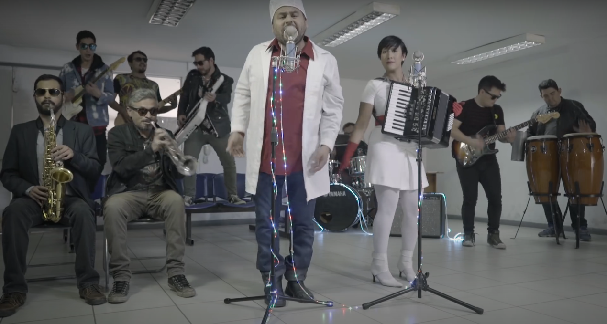
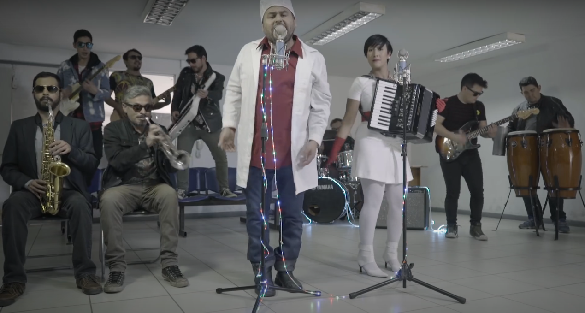
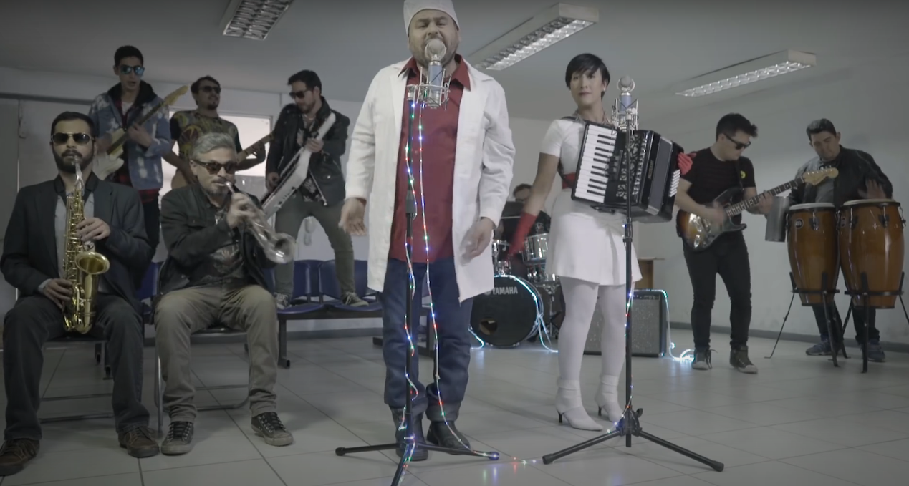

Dirección de fotografía cortometraje de ficción “Kafkuyaenew ta ko (Me susurra el agua)”
En su casa al interior de la Araucanía, Kamila (23), una joven mapuche, padece extraños síntomas y visiones tras haberse bañado en un río. Preocupado por la gravedad de su hermana, Miguel (35) buscará ayuda, revelándose la naturaleza de su enfermedad.
Asistencia de vestuario película de ficción “Allanamiento”
Inspirado en una historia real. Tras un grave error en un operativo ilegal, cuatro detectives tienen 48 horas para intentar limpiar sus rastros y librarse de una investigación que los acusa de narcotráfico, torturas y corrupción.
Asistencia de vestuario película de ficción “Perro bomba”
Después de que Steevens ayuda a su amigo con un trabajo, su precario equilibrio de la vida se ve afectado por una serie de eventos inesperados.
